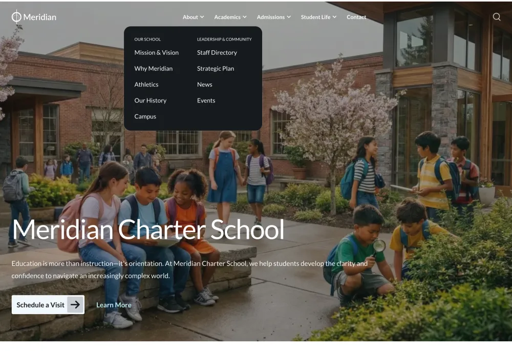
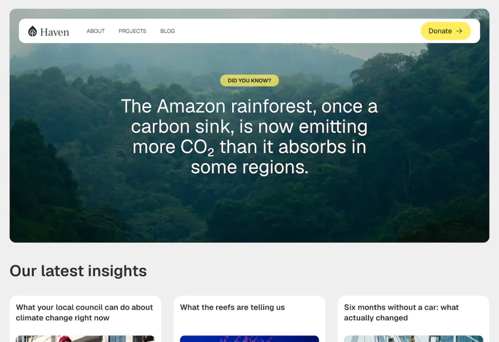
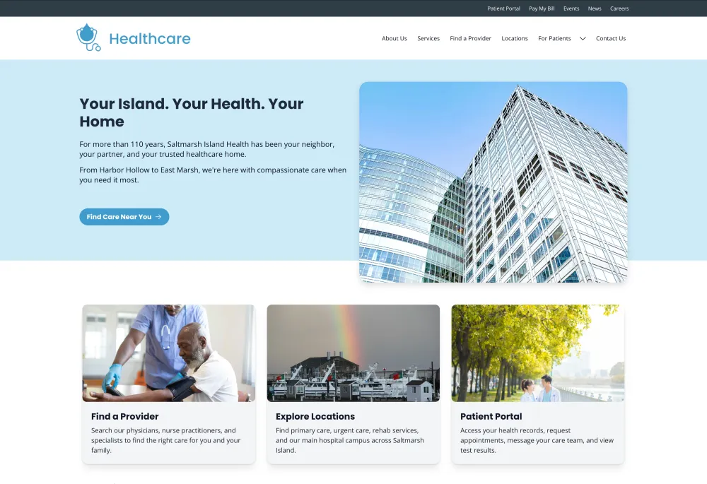
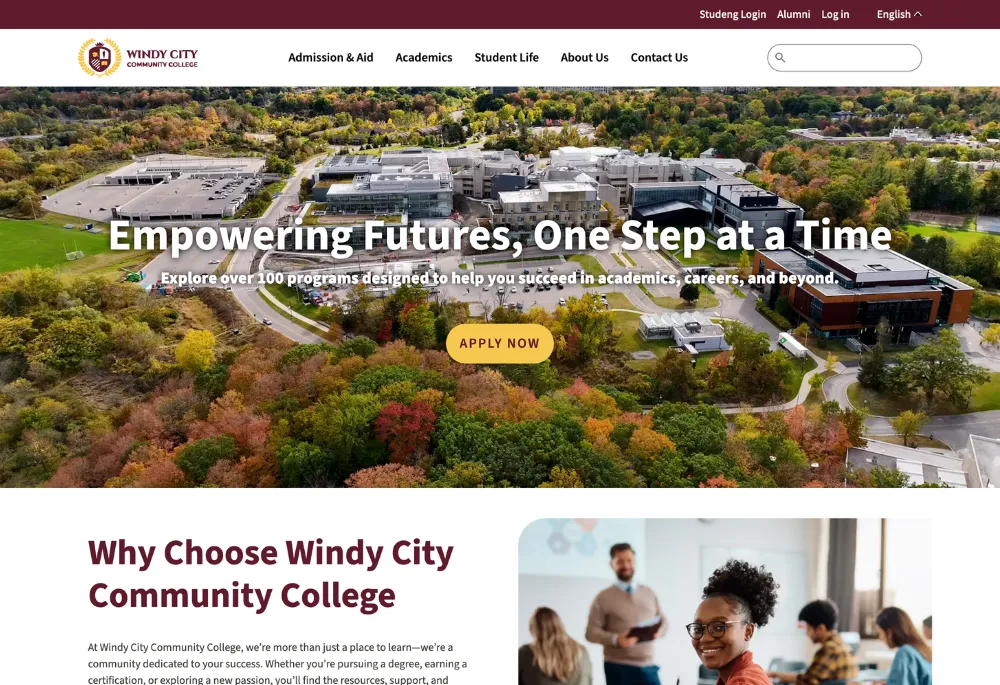
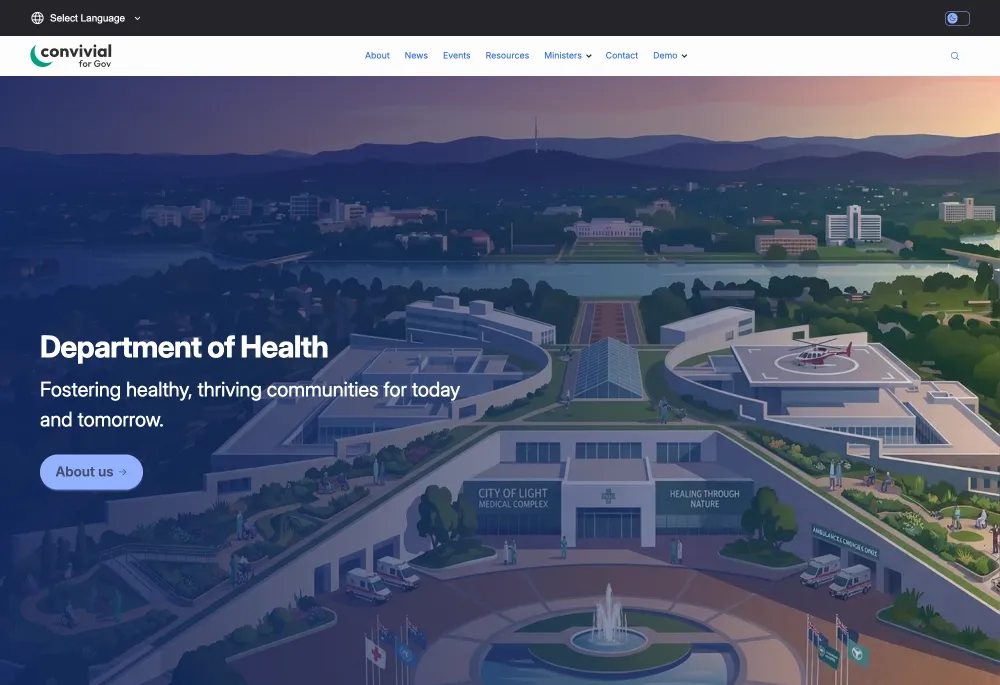
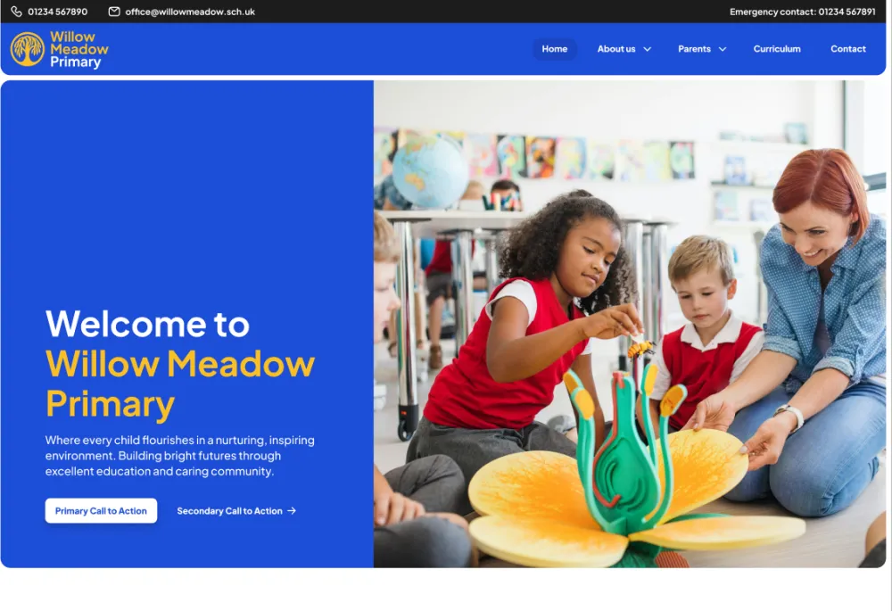
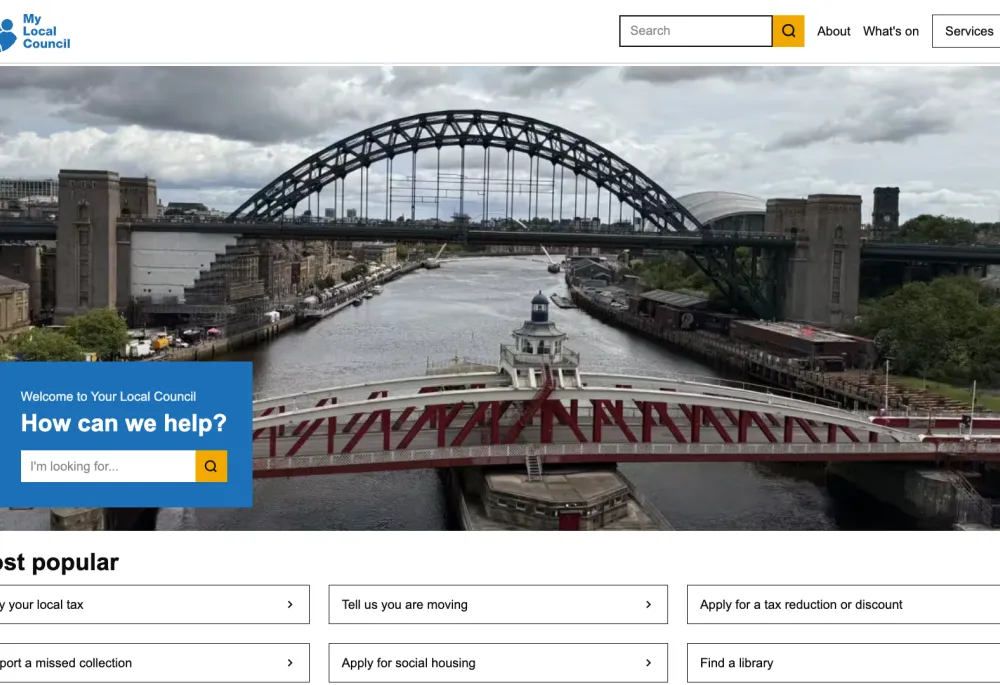
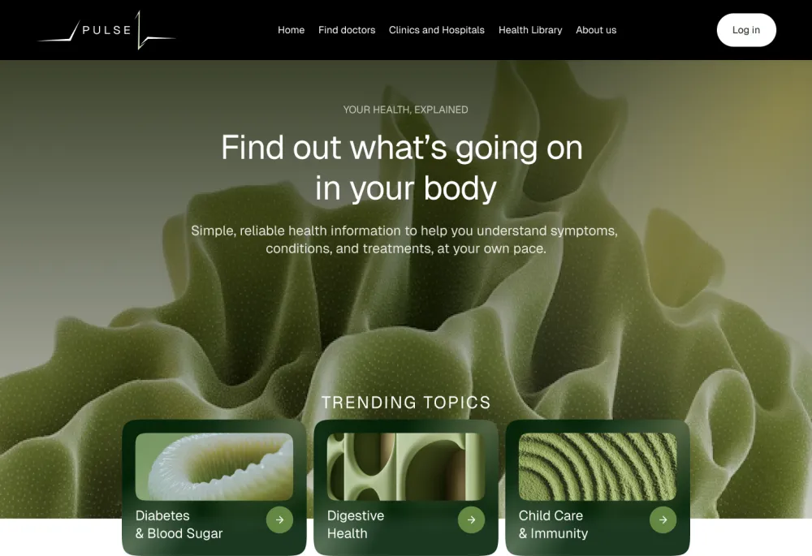
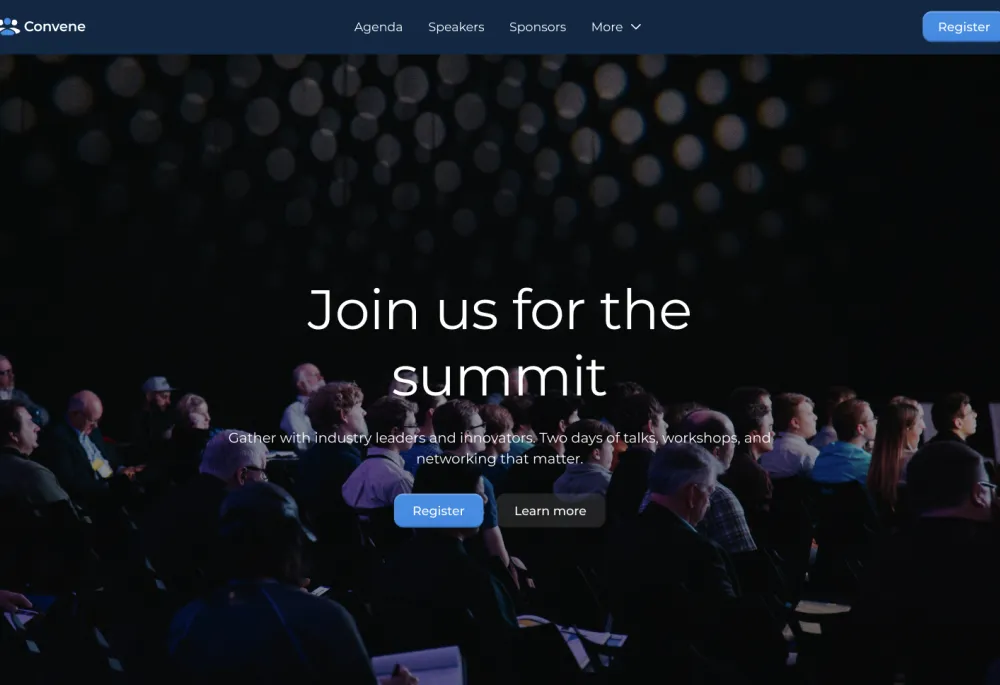
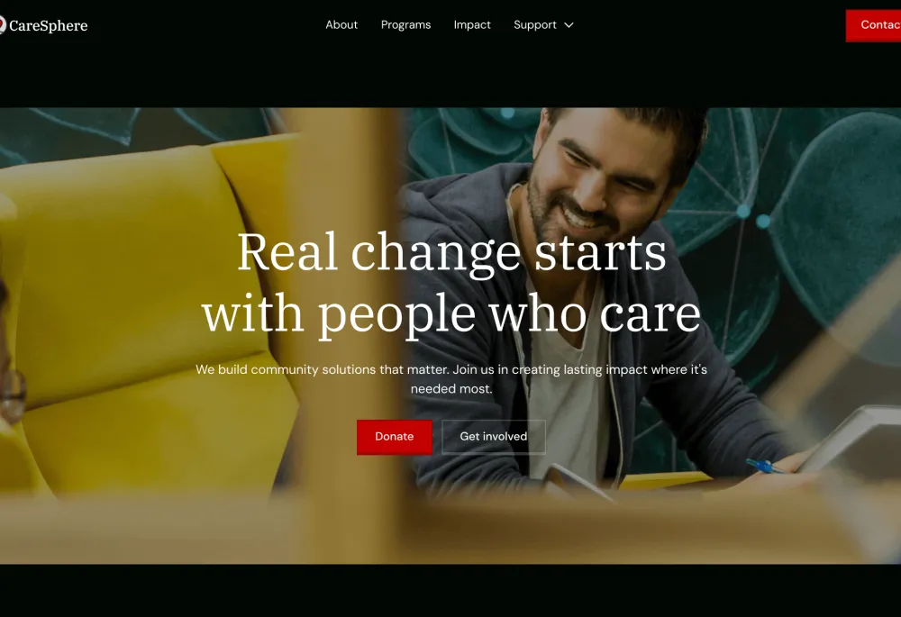

Byte
A polished, accessible Drupal theme built for K-12 charter schools, private academies, and educational institutions. Meridian Charter delivers a professional school website out of the box with dedicated layouts for academics, admissions, athletics, events, staff directories, and more — powered by Dripyard.

Haven
Designed for non-profit sites, this template features a bright, warm design that can be adapted for many use cases. It comes pre-configured with landing pages, blog, projects and people profiles, as well as newsletter signup, donation add-ons and more.
Healthcare
Healthcare is a professional, patient-centered Drupal site template that gets medical clinics and healthcare organizations online in weeks instead of months, with beautiful design, accessibility compliance, and powerful patient discovery features built in.

Dripyard - Meridian Charter
A polished, accessible Drupal theme built for K-12 charter schools, private academies, and educational institutions. Meridian Charter delivers a professional school website out of the box with dedicated layouts for academics, admissions, athletics, events, staff directories, and more — powered by Dripyard.

Provus EDU
A robust, Bootstrap-based educational theme designed specifically for schools, colleges, and universities. Optimized for Drupal Canvas to manage academic programs, course catalogs, and campus life with ease.

CareSphere - Non-Profit / NGO Website Template
CareSphere is a site template designed for non-profit organizations, community groups, and social initiatives that need a clear and effective online presence. It provides a structured starting point for communicating an organization’s mission, showcasing programs and impact, sharing updates, and encouraging community engagement.

Morpht - Convivial Gov
A starter site for government built on Drupal Canvas and Recipes providing editor-friendly components for best-practice government sites. This is a freemium site template.

Pulse – Healthcare & Content Platform Site Template
Pulse is a Drupal CMS site template designed to quickly bootstrap healthcare, research, and content-driven websites using modern Drupal CMS capabilities such as Canvas layouts, reusable design system components, and pre-configured content structures.

Archimedes
Archimedes is a Drupal CMS site template designed for school websites. It includes landing pages, blog and news functionality, newsletter sign-up, and a range of features tailored to educational organisations.

Local
Local is a Drupal CMS site template for organisations that help people find the services and information they need — local councils, community support services and community participation organisations.

Convene - Event / Conference Marketing Site Template
The Event / Conference Marketing Site Template provides a ready-to-use structure for creating websites for conferences, festivals, workshops, summits, and community events. It includes a clear structure for presenting event details such as schedules, speakers, venue information, and registration links.